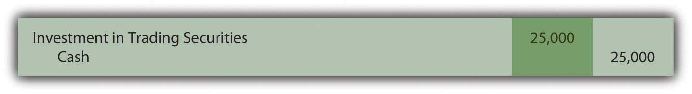
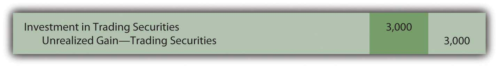
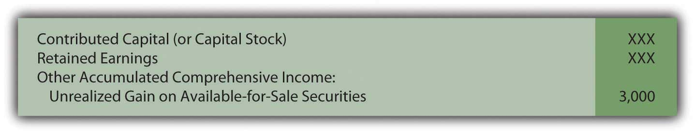
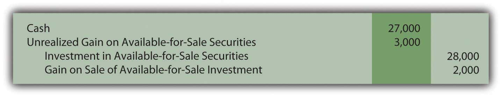
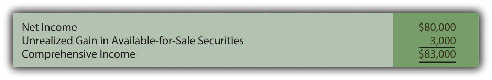
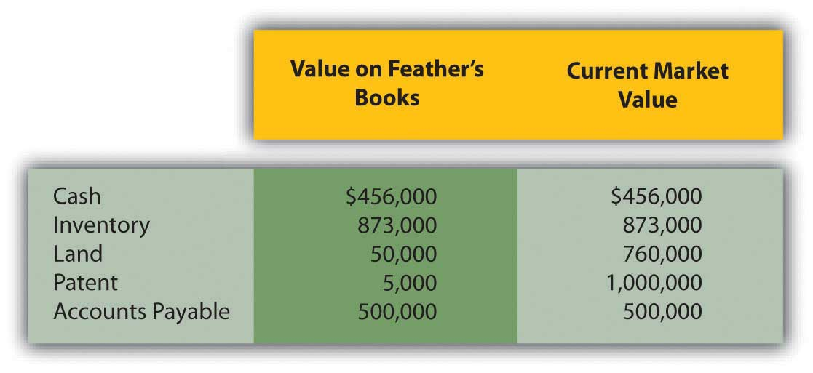
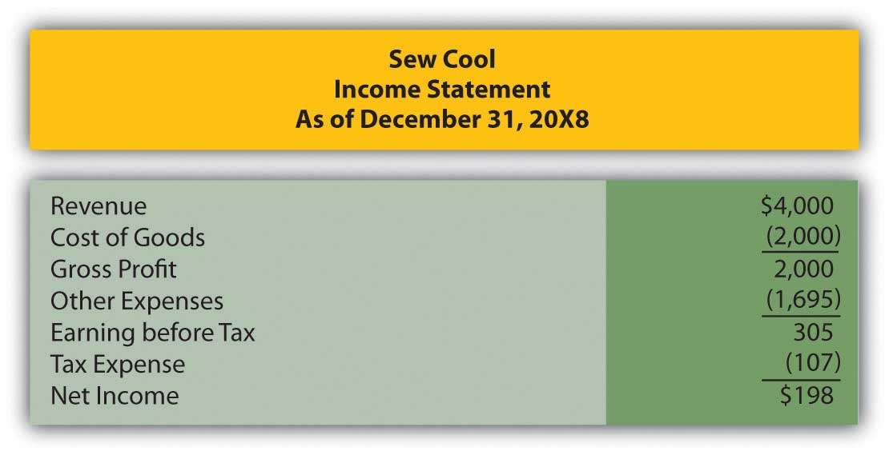
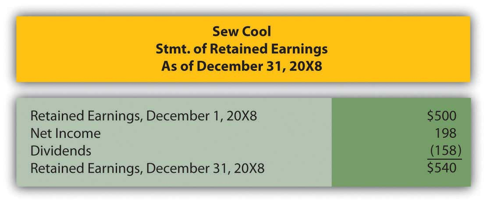
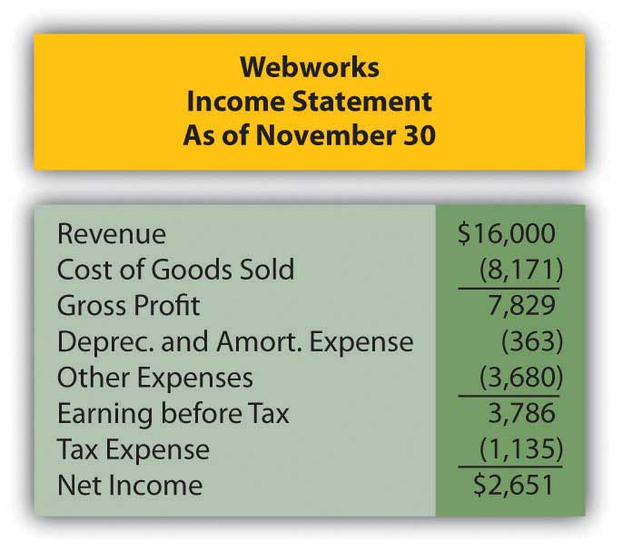
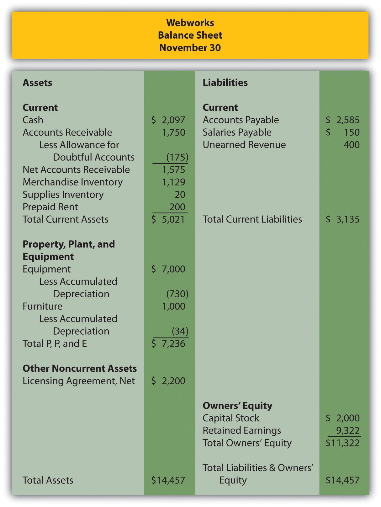

Joe introduces Chapter 12 "In a Set of Financial Statements, What Information Is Conveyed about Equity Investments?" and speaks about the course in general.
At the end of this section, students should be able to meet the following objectives:
Question: Businesses frequently acquire ownership (equity) shares of other companies. On June 30, 2009, Microsoft disclosed that it held investments in the stock of other companies with a value of over $4.4 billion. During 2008, Mars Inc. offered to buy all the ownership shares of Wm. Wrigley Jr. Company for approximately $23 billion. The acquisition of Merrill Lynch by Bank of America made headlines around the world in the fall of 2008. The purchase of such shares offers many potential benefits. What are the most common reasons for one company to buy the ownership shares of another company?
Answer: Potentially, many benefits can accrue from obtaining shares of the stock issued by a business. The method of financial reporting applied by the owner depends on the purpose for holding such investments. Thus, the accounting process here is unique. The reporting of most assets does not vary significantly because of the rationale for making the purchase and retaining the property. In contrast, information about the ownership of the stock of another company is presented according to one of several methods based solely on the reason for the investment.
Companies frequently find that they are holding excess cash not needed at the moment for operating purposes. Traditional savings accounts or money market funds offer very low returns for this money. Company officials often seek a greater profit by using surplus cash to buy the ownership shares of other organizations. The hope is that the market price of these shares will appreciate in value and/or dividends will be received before the money is needed for operations. Such investments can be held for a few days (or even hours) or many years. Although earnings can improve through this strategy, the buyer does face additional risk. Share prices do not always go up; they can also decline resulting in losses for the investor.
When equity shares are bought solely as a way to store cash in a possibly lucrative spot, the investor has no interest in influencing or controlling the decisions of the other company. That is not the reason for the purchase; the ownership interest is much too small.
Investors, though, may also embrace a strategy of acquiring enough shares to gain some degree of influence over the other organization. Often, profitable synergies can be developed by having two companies connected in this way. For example, at the end of 2008, The Coca-Cola Company (CCC) held approximately 35 percent of the outstanding stock of Coca-Cola Enterprises (CCE), its primary bottler and distributor. CCC does not own sufficient shares to controlIndicates that consolidated financial statements should be reported by bringing together the financial information of two companies; according to U.S. GAAP, it exists when one company owns more than 50 percent of the outstanding common shares of another company. the operations of CCE but it certainly can apply significant influence if it so chooses.
Finally, as in the bid by Mars to acquire Wrigley, the investor may seek to obtain a controlling interest in the other company. In many cases, one company even acquires 100 percent ownership of the other. Such acquisitions are actually common as large companies attempt to move into new industries or geographical areas, become bigger players in their current markets, gain access to valuable assets, or simply eliminate competitors. Many smaller companies are started by entrepreneurs with the specific hope that success will eventually attract acquisition interest from a larger organization. Often, a significant profit can be earned by the original owners as a result of the sale of their company.
Question: There are clearly different reasons for buying stock. Assume that Valente Corporation is holding $25,000 in cash that it will not need for several weeks. The money is currently in a money market fund earning only a 1 percent annual rate of return. In hopes of generating a higher profit, the president of Valente has studied the financial statements of Bayless Corporation, a company with capital stock trading on the New York Stock Exchange (NYSE) for $25 per share. On November 30, Year One, the president believes that Bayless stock is primed to have a rather significant jump in market price in the near future. Consequently, Valente uses the $25,000 to acquire one thousand shares of stock in Bayless that will be held for only a few weeks or months. How does an owner report an equity investment that is bought with the expectation that the shares will be sold shortly after the purchase is made?
Answer: If management’s intentions are to buy and sell the equity shares of another company in the near term, the purchase is classified on the balance sheet as an investment in trading securitiesClassification of investments in stocks and bonds when management’s intentions are to buy and sell them quickly in the near term; they are reported on the balance sheet at fair value with all changes in value affecting net income.. On the acquisition date, the asset is recorded by Valente at historical cost.
Figure 12.1 Purchase of Ownership Shares Classified as Trading Securities
As an owner, even for a short period of time, Valente might well receive a cash dividend from Bayless. Many companies distribute dividends to their stockholders periodically as a way of sharing a portion of any income that has been earned.
Assume that Bayless has been profitable and, as a result, a $0.20 per share cash dividend is declared by its board of directors and paid in December. Valente receives $200 of this dividend ($0.20 per share × one thousand shares) which is reported as revenue on the company’s income statement for this period.
Figure 12.2 Receipt of Dividend from Investment in Stock

Because of the short-term nature of this investment, Valente might sell these shares prior to the end of the year. The purchase was made anticipating a quick sale. A gain is reported if more than $25,000 is received while a loss results if the shares are sold for less than $25,000. As with dividend revenue, such gains and losses appear on the owner’s income statement.
Accounting becomes more complicated if Valente continues to hold this investment at year end. Should equity shares held as a trading security be reported in the owner’s financial statements at historical cost or current fair value? Which reporting is most helpful to outside decision makers?
U.S. GAAP requires investments in trading securities to be reported on the balance sheet at fair value. Therefore, if the shares of Bayless are worth $28,000 at December 31, Year One, Valente must adjust the reported value from $25,000 to $28,000 by reporting a gain.
Figure 12.3 Shares of Bayless (a Trading Security) Adjusted to Fair Value at End of Year
The gain here is labeled as “unrealizedA gain or loss created by an increase or decrease in the value of an asset although not yet finalized by a sale.” to indicate that the value of the asset has appreciated but no final sale has yet taken place. The gain is not guaranteed; the value might go back down before the shares are sold. However, the unrealized gain is recognized and reported on the owner’s Year One income statement.
Link to multiple-choice question for practice purposes: http://www.quia.com/quiz/2092911.html
Question: The reporting demonstrated above for an investment in a trading security raises a question that has long been debated in financial accounting. Is recognizing a gain (or loss if the value had declined prior to the end of the year) on the owner’s income statement appropriate if no actual sale has yet occurred? There is an important related question. In previous chapters, assets such as buildings, copyrights, and inventory were never adjusted to fair value unless an impairment had taken place. Why is an investment in a trading security recorded at fair value regardless of whether that value is above or below historical cost?
Answer: According to U.S. GAAP, changes in the value of trading securities are reported and the resulting gains or losses are shown within current net income for several reasons:
At year-end, this investment (as a trading security) will be reported on the investor’s balance sheet at its fair value of $28,000. On the income statement, both the dividend revenue of $200 and the unrealized gain of $3,000 are shown as increases in net income.
If, instead, the fair value at year-end had been only $21,000, a $4,000 unrealized loss will appear on Valente’s income statement to reflect the decline in value ($25,000 historical cost dropping to $21,000 fair value).
Link to multiple-choice question for practice purposes: http://www.quia.com/quiz/2092969.html
Question: In this ongoing illustration, Valente Corporation had bought one thousand shares of Bayless Corporation which it planned to sell in a relatively short period of time. On the last day of Year One, this trading security was adjusted from the historical cost of $25,000 to the fair value of $28,000. The $3,000 unrealized gain was reported within net income on the Year One income statement.
Assume that these shares are subsequently sold by Valente on February 3, Year Two, for $27,000. What reporting is appropriate when an investment in trading securities is sold in a subsequent period? What effect does this final transaction have on reported income?
Answer: Following the Year One adjustment, this investment is recorded in the general ledger at fair value of $28,000 rather than historical cost. Subsequently, when sold, any difference between the sales price and this carrying amount is recorded as a gain or a loss on the Year Two income statement.
Because the sales price of these shares ($27,000) is less than the reported balance ($28,000), recognition of a $1,000 loss is appropriate. This loss reflects the drop in value that took place during Year Two.
Figure 12.4 Sale of Shares of Bayless (a Trading Security) for $27,000 in Year Two

This investment was originally bought for $25,000 and eventually sold for $27,000 so an overall gain of $2,000 was earned. For reporting purposes, the income effect is spread between the two years of ownership. A gain of $3,000 was recognized in Year One to reflect the appreciation in value during that period. A loss of $1,000 is reported in Year Two because the stock price fell by $1,000 in that period prior to being sold.
Investments in trading securities are always shown on the owner’s balance sheet at fair value. Gains and losses reported in the income statement parallel the movement in value that took place each period.
Link to multiple-choice question for practice purposes: http://www.quia.com/quiz/2092949.html
Many companies acquire equity shares of other companies. The applicable accounting procedures depend on the purpose for the ownership. If the investment is only to be held for a short period of time, it is labeled a trading security and adjusted to fair value whenever financial statements are to be produced. Any change in value creates a gain or loss that is reported within net income because fair value is objectively determined, the shares can be liquidated easily, and a quick sale is anticipated before a large change in fair value is likely to occur. Dividends received by the owner are recorded as revenue. Whenever trading securities are sold, only the increase or decrease in value during the current year is reported within net income since earlier changes have already been reported in that manner.
At the end of this section, students should be able to meet the following objectives:
Question: Not all investments in stock are bought for a quick sale. Assume Valente Corporation buys one thousand shares of Bayless Corporation for $25 in Year One but does not anticipate selling the investment in the near term. Company officials intend to hold these shares for the foreseeable future until the money is clearly needed. Although the stock could be sold at any time, the president of Valente believes this investment might well be retained for years. During Year One, a $200 cash dividend is received from the Bayless shares. At the end of that period, the stock is selling for $28 per share. How does the decision to hold equity shares for an extended period of time impact the financial reporting process?
Answer: Because Valente’s intention is to retain these shares for an indefinite period, they will be classified on the company’s balance sheet as an investment in available-for-sale securitiesClassification of investments in stocks and bonds when management’s intentions are to retain them for an indefinite period; they are reported on the balance sheet at fair value although gains and losses are included in stockholders’ equity and not within net income. rather than as trading securities. Despite the difference in the plan for these shares, they are—once again—recorded at historical cost when acquired.
Figure 12.5 Purchase of Ownership Shares Classified as Available-for-Sale Securities

The receipt of the dividend is also reported in the same manner as before with the dividend revenue increasing Valente’s net income.
Figure 12.6 Receipt of Dividend from Investment in Stock

The difference in reporting begins at the end of the year. U.S. GAAP requires available-for-sale investments to be included on the investor’s balance sheet at fair value (in the same manner as trading securities). As before, this adjustment to fair value creates an unrealized gain of $3,000. However, reported net income is not affected as it was with the investment in the trading security.
Figure 12.7 Shares of Bayless (an Available-for-Sale Security) Adjusted to Fair Value at End of Year

Question: An immediate question is obvious: If not presented on the income statement, how is the $3,000 unrealized gain in the value of this investment shown by the owner? How are changes in the value of available-for-sale securities reported?
Answer: Because no sale is expected in the near term, the fair value of available-for-sale shares will possibly go up and down numerous times before being sold. Hence, the current gain is not viewed as “sure enough.” As a result of this uncertainty, a change in the owner’s reported net income is not considered appropriate. Instead, any unrealized gain (or loss) in the value of an investment that is classified as available-for-sale is reported within the stockholders’ equity section on the balance sheet. The figure is listed either just above or below the retained earnings account. A few other unrealized gains and losses are handled in this manner and are usually combined and reported as “other accumulated comprehensive incomeA section of the stockholders’ equity of the balance sheet where unrealized gains and losses on available-for-sale securities (as well as a few other specified gains and losses) are shown rather than being included within net income..”
Figure 12.8 Stockholders’ Equity Including Other Accumulated Comprehensive Income
The above procedures were first created in 1993 and have been used since that time. Interestingly, in 2007, FASB passed a rule that allows companies to elect to report available-for-sale investments in the same manner as trading securities. This option must be selected when the investment is purchased. Thus, if that election is made, the $3,000 unrealized gain above is reported on the income statement despite the intention to hold the securities for an indefinite period. This is another example of accounting rules that are not as rigid as sometimes perceived.
Link to multiple-choice question for practice purposes: http://www.quia.com/quiz/2092972.html
Question: Assume that Valente has chosen not to report the above available-for-sale investment in the same manner as a trading security but rather by means of the traditional approach. Thus, the $3,000 unrealized gain created by the appreciation of value is reported within stockholders’ equity at the end of Year One. Subsequently, in Year Two, these shares are sold on the stock exchange for $27,000. What reporting is made at that time? How is the eventual sale of investments that are classified as available-for-sale securities reported?
Answer: When available-for-sale securities are sold, the difference between the original cost ($25,000) and the selling price ($27,000) is reported as a realized gain (or loss) on the income statement. Because no change in net income was reported in the previous year, this entire amount has to be reported at the date of sale. Having put the unrealized gain into stockholders’ equity in Year One means that the change in value only touches net income when sold.
However, mechanical complexities now exist. The investment has been adjusted to a $28,000 carrying amount and a $3,000 unrealized gain is still reported within stockholders’ equity. As a balance sheet account, this $3,000 figure is not closed out at the end of Year One. When the investment is sold, both the $28,000 asset and the $3,000 unrealized gain must be removed. The net amount mirrors the $25,000 historical cost of these shares. By eliminating the previous gain in this manner, the asset is brought back to the original $25,000. Thus, the appropriate realized gain of $2,000 is recognized: the shares were bought for $25,000 and sold for $27,000.
Figure 12.9 Sale of Available-for-Sale Security in Year Two
Link to multiple-choice question for practice purposes: http://www.quia.com/quiz/2092950.html
Question: In Year One, Valente’s investment in the shares of Bayless Corporation rose in value by $3,000. If those investments are classified as available-for-sale, this unrealized gain does not impact reported net income but, rather, stockholders’ equity. This handling is justified because the investor will not necessarily sell these shares in the near future so that numerous subsequent changes in value are likely to take place.
However, net income seems a bit misleading since it does not reflect the increase in the reported worth of this asset. Assume, for example, that Valente reports total net income for Year One of $80,000. That figure includes no part of the $3,000 unrealized gain. What reporting is necessary to help investors understand the impact on income of a change in value when investments are labeled as available-for-sale?
Answer: Indeed, the completeness of reported net income in such situations can be questioned. As noted, changes in the value of available-for-sale securities create unrealized gains or losses that appear in the stockholders’ equity section of the balance sheet but not in net income. To help decision makers better evaluate the reporting company, a second income figure is disclosed that does include these gains or losses. The resulting balance is known as comprehensive incomeNet income plus any unrealized gains and less any unrealized losses that appear in the stockholders’ equity section rather than within net income; it can be shown at the bottom of the income statement or in a separate schedule.. It can be shown on the bottom of a company’s income statement or in a separate schedule. Here, by adding in the $3,000 change in fair value, Valente’s net income figure is adjusted to the more complete total.
Figure 12.10 Net Income Converted to Comprehensive Income
Decision makers can choose to emphasize one figure (net income) or another (comprehensive income) in their analysis of the reporting company. More appropriately, they can view the two figures as simply different ways to portray the results of the current year and make use of both.
Comprehensive income includes all changes in stockholders’ equity other than (a) amounts contributed by stockholders and (b) dividend distributions made to stockholders. Unrealized gains and losses on available-for-sale securities are common but several other unrealized gains and losses are also included in moving from net income to comprehensive income.
For example, for the year ended December 31, 2008, Yahoo! Inc. reported its net income as approximately $424 million. However, the company also disclosed comprehensive income of only $213 million. The $211 million reduction was caused by including gains and losses that resulted from (a) changes in value of available-for-sale securities and (b) translation changes in currency exchange rates reported by subsidiaries operating in foreign countries. According to U.S. GAAP, these gains and losses were not deemed appropriate for inclusion in net income and, instead, were shown in stockholders’ equity. However, interested parties can still see their impact on income as reflected in the comprehensive income figure.
Link to multiple-choice question for practice purposes: http://www.quia.com/quiz/2092951.html
Investments in equity securities are often held by the owner for an indefinite period of time. As such, the asset is classified as available-for-sale and shown at fair value each period. Any changes in the reported amount is not included in net income but is rather listed within other accumulated comprehensive income in the stockholders’ equity section of the balance sheet. However, dividends received from the investment are reported as revenue and include in net income. When eventually sold, the difference between original cost and the proceeds received is reported as a gain or loss shown within net income. Because periodic changes in value are not factored into the calculation of net income, they are included in determining comprehensive income. Thus, both net income and comprehensive income are reported to allow decision makers to better understand the impact of these unrealized gains and losses.
At the end of this section, students should be able to meet the following objectives:
Question: Not all investments in corporate stock are made solely for the possibility of gaining dividends and share price appreciation. As mentioned earlier, The Coca-Cola Company holds 35 percent ownership of Coca-Cola Enterprises. The relationship between that investor and investee is different. The investor has real power; it can exert some amount of authority over the investee. The Coca-Cola Company owns a large enough stake in CCE so that operating and financing decisions can be influenced. When one company holds a sizable portion of another company, is classifying and accounting for the investment as an available-for-sale or trading security a reasonable approach?
Answer: The answer to this question depends on the size of ownership. As the percentage of shares grows, the investor gradually moves from having little or no authority over the investee to a position where significant influence can be exerted. At that point, the investment no longer qualifies as a trading security or an available-for-sale security. Instead, the shares are reported by means of the equity methodA method of reporting an investment in stock that is applied when the owner has the ability to exert significant influence on the decisions of an investee; it is used to report investments where 20 percent or more and less than or equal to 50 percent of the shares are held, unless evidence exists that significant influence does not exist.. The rationale for holding the investment has changed.
The equity method views the relationship of the two companies in an entirely different fashion. The accounting process applied by the investor must be altered. Consequently, a note to the 2008 financial statements prepared by The Coca-Cola Company states, “We use the equity method to account for our investments for which we have the ability to exercise significant influence over operating and financial policies. Consolidated net income includes our Company’s proportionate share of the net income or net loss of these companies.”
The equity method is applied when the investor has the ability to apply significant influences to the operating and financing decisions of the investee. Unfortunately, the precise point at which one company gains that ability is impossible to ascertain. A bright line distinction simply does not exist. Although certain clues such as membership on the board of directors and the comparative size of other ownership interests can be helpful, the degree of influence is a nebulous criterion. When a question arises as to whether the ability to apply significant influence exists, the percentage of ownership can be used to provide an arbitrary standard.
According to U.S. GAAP, unless signs of significant influence are present, an investor owning less than 20 percent of the outstanding shares of another company reports the investment as either a trading security or available-for-sale security. In contrast, an investor holding 20 percent or more but less than or equal to 50 percent of the shares of another company is assumed to possess the ability to exert significant influence. Unless evidence is present that significant influence does not exist, the equity method is applied by the investor to report all investments in this 20–50 percent range of ownership.
Link to multiple-choice question for practice purposes: http://www.quia.com/quiz/2092970.html
Question: One company holds shares of another and has the ability to apply significant influence so that the equity method of accounting is appropriate. What reporting is made of an investment when the equity method is used? What asset value is reported on the owner’s balance sheet and when is income recognized under this approach?
Answer: When applying the equity method, the investor does not wait until dividends are received to recognize profit from its investment. Because of the close relationship, the investor reports income as it is earned by the investee. If, for example, a company reports net income of $100,000, an investor holding a 40 percent ownership immediately records an increase in its own income of $40,000 ($100,000 × 40 percent). In recording this income, the investor also increases its investment account by $40,000 to reflect the growth in the size of the investee company.
Income is recognized by the investor immediately as it is earned by the investee. Thus, it cannot be reported again when a subsequent dividend is collected. That would double-count the impact. Income must be recognized either when earned by the investee or when later distributed to the investor, but not at both times. The equity method uses the earlier date rather than the latter. Eventual payment of a dividend shrinks the size of the investee company. Thus, the investor decreases the investment account when a dividend is received if the equity method is applied. No additional income is recorded.
Companies are also allowed to report such investments as if they were trading securities. However, few have opted to make this election. If chosen, the investment is reported at fair value despite the degree of ownership with gains and losses in the change of fair value reported in net income.
Question: In applying the equity method, income is recognized by the investor when earned by the investee. Subsequent dividend collections are not reported as revenue by the investor but rather as a reduction in the size of the investment account to avoid including the income twice.
To illustrate, assume that Big Company buys 40 percent of the outstanding stock of Little Company on January 1, Year One, for $900,000. No evidence is present that provides any indication that Big lacks the ability to exert significant influence over the financing and operating decisions of Little. Thus, application of the equity method is appropriate. During Year One, Little reports net income of $200,000 and pays a total cash dividend to its stockholders of $30,000. What recording is appropriate for an investor when the equity method is applied to an investment?
Answer: The purchase of 40 percent of Little Company for cash is merely the exchange of one asset for another. Thus, the investment is recorded initially by Big at its historical cost.
Figure 12.11 Acquisition of Shares of Little to Be Reported Using the Equity Method
Ownership here is in the 20 to 50 percent range and no evidence is presented to indicate that the ability to apply significant influence is missing. Thus, according to U.S. GAAP, the equity method is applied. Big recognizes its portion of Little’s $200,000 net income as soon as it is earned by the investee. As a 40 percent owner, Big accrues income of $80,000. Because earning this income caused Little Company to grow, Big increases its investment account to reflect the change in the size of the investee.
Figure 12.12 Income of Investee Recognized by Investor Using the Equity Method

Big has recognized the income from this investee as it was earned. Consequently, any eventual dividend received from Little is a reduction in the investment in Little account rather than a new revenue. The investee company is smaller as a result of the cash payout. The balance in this investment account rises when the investee reports income but then falls (by $12,000 or 40 percent of the total distribution of $30,000) when that income is later passed through to the stockholders.
Figure 12.13 Dividend Received from Investment Accounted for by the Equity Method

On Big’s income statement for Year One, investment income—Little is shown as $80,000. Because the equity method is applied, the reader knows that this figure is the investor’s ownership percentage of the income reported by the investee.
At the end of Year One, the investment in Little account appearing on Big’s balance sheet reports $968,000 ($900,000 + 80,000 – 12,000). This total does not reflect fair value as with investments in trading securities and available-for-sale securities. It also does not disclose historical cost. Rather, the $968,000 asset balance is the original cost of the shares plus the investor’s share of the investee’s subsequent income less any dividends received. Under the equity method, the asset balance is a conglomerate of numbers.
Link to multiple-choice question for practice purposes: http://www.quia.com/quiz/2092971.html
Question: Assume, at the end of Year One, after the above journal entries have been made, Big sells all of its shares in Little Company for $950,000 in cash. When the equity method is applied to an investment, what is the appropriate recording of an eventual sale?
Answer: An investment reported using the equity method quickly moves away from historical cost as income is earned and dividends received. After just one year, the asset balance reported above by Big has risen from $900,000 to $968,000 (income of $80,000 was added and $12,000 in dividends were subtracted). If these shares are then sold for $950,000, a loss of $18,000 is recognized.
Figure 12.14 Sale of Investment Reported Using the Equity Method

If these shares had been sold for more than their $968,000 carrying value, a gain on the sale is recorded.
Summary. All investments in the stock of another company—where ownership is no more than 50 percent—must be accounted for in one of three ways depending on the degree of ownership and the intention of the investor.
Figure 12.15 Comparison of Three Methods to Account for Investments
*At the time of acquisition, an investor has the option of accounting for investments that are available for sale or investments where the ability to apply significant influence is present by the same method as that used for trading securities.
Link to multiple-choice question for practice purposes: http://www.quia.com/quiz/2092992.html
Link to multiple-choice question for practice purposes: http://www.quia.com/quiz/2093013.html
At some point, an owner can gain enough equity shares of another company to have the ability to apply significant influence. Use of the equity method then becomes appropriate. Significant influence is difficult to gauge so ownership of 20–50 percent of the outstanding stock is the normal standard applied in practice. However, if evidence is found indicating that significant influence is either present or does not exist, that takes precedence regardless of the degree of ownership. Under the equity method, income is recognized by the investor as soon as earned by the investee. The investment account also increases as a result of recognizing this income. Conversely, dividends are not reported as income but rather as reductions in the investment balance. Unless a permanent decline occurs, fair value is not taken into consideration in accounting for an equity method investment. When sold, the book value of the asset is removed so that any difference with the amount received can be recognized as a gain or loss.
At the end of this section, students should be able to meet the following objectives:
Question: Many companies buy more than 50 percent of the stock of other companies in order to gain control. In a large number of these acquisitions, one company obtains all the outstanding shares of the other so that ownership is complete. If two companies are brought together to form a third, a merger has taken place. If one company simply buys another, the transaction is known as an acquisition. Thomson Financial reported that approximately 35,000 mergers and acquisitions took place around the world during 2006 with a total value of $3.5 trillion. The recent recession has reduced that trend a bit.
Such investments are often made to expand operations into new markets or new industries. Google, for example, acquired YouTube for $1.65 billion to move into the presentation of online videos. As discussed earlier in the coverage of intangible assets, one company might buy another to obtain valuable assets such as patents, real estate, trademarks, technology, and the like. Walt Disney’s purchase of Pixar and its digital animation expertise appears to fall into this category. Such transactions can also be made to eliminate competition or in hopes of gaining economies of scale. Sprint’s $35 billion merger with Nextel was projected to increase profits for the combined companies by lowering operating expenses while also reducing the number of competitors in the wireless communication industry.
To help explain the appropriate method of accounting for such investments, assume that Giant Company acquires 100 percent of Tiny Company. Obviously, control has been obtained. How is the reporting by Giant affected? Because over 50 percent of the stock was purchased, none of the previously described accounting methods are applicable. How does a company report the acquisition of another company where control is established?
Answer: According to U.S. GAAP, control is gained by the acquisition of over 50 percent of the voting stock of a company. The stockholders of Giant now control both Giant and Tiny. As a result, a business combination has been formed from the two previously independent companies. For external reporting purposes, consolidated financial statementsStatements that are prepared when one company holds control over another company. are required. Giant does not report an investment in Tiny account on its balance sheet as with the other methods described above. Instead, in consolidation, the individual account balances from each organization are put together in a prescribed fashion to represent the single economic entity that has been created. In simple terms, the assets, liabilities, revenues, and expenses of Tiny (the subsidiary) are consolidated with those of Giant (the parent) to reflect the united business.
Because such acquisitions are common, the financial statements reported by many well-known corporations actually include consolidated financial data from hundreds of different subsidiaries where control has been gained over a number of years. As just one example, Cisco Systems made approximately sixty acquisitions of other companies between 2000 and 2007. Subsequently, the published financial statements for Cisco Systems included the revenues, expenses, assets, and liabilities of each of those subsidiaries.
Consolidation of financial statements is one of the most complex topics in all of financial accounting. However, the basic process is quite straightforward.
Subsidiary revenues and expenses. The revenues and expenses of each subsidiary are included in consolidated figures but only for the period after control is gained. Consequently, if Giant obtains Tiny by buying 100 percent of its stock on April 1, a consolidated income statement for these two companies will contain no revenues and expenses recognized by Tiny prior to that date. Income statement balances accrued under previous owners have no financial impact on the new owner, Giant. Only the revenues and expenses of this subsidiary starting on April 1 are included in the consolidated totals calculated for Giant Company and its consolidated subsidiary.
Subsidiary assets and liabilities. Consolidation of subsidiary assets and liabilities is a more complicated process. On the date of the takeover, a total acquisition price is determined based on the fair value surrendered by the parent in order to gain control. A search is then made to identify all the individual assets and liabilities held by the subsidiary at that time. As discussed in the previous chapter, the parent recognizes all subsidiary assets (1) that provide contractual or legal rights or (2) in which the asset can be separated and then sold. Fair value is established and recorded for each as if the parent were acquiring them individually. A transaction has taken place that brings all of those subsidiary assets and liabilities under the control of the parent company. Consolidation values are reported as if they were bought separately by the parent.
Also, as explained previously, if the acquisition price is more than the total fair value of all these identifiable assets and liabilities, the intangible asset goodwill is reported for the difference. As a going concern, a total value is usually attributed to a company that exceeds the individual values of its assets and liabilities. Having loyal customers and trained employees, for example, helps a company generate more profits than its assets could otherwise earn. When a company is being bought, such anticipated profitability usually leads to an increase in the negotiated price. This excess amount necessitates the recognition of goodwill on the consolidated balance sheet.
Link to multiple-choice question for practice purposes: http://www.quia.com/quiz/2092973.html
Question: To illustrate the consolidation process, assume that Tiny has earned revenues of $800,000 and incurred expenses of $500,000 during the year to date. In addition, the company reports a single asset, land costing $400,000 but with a $720,000 fair value. The only liability is a $300,000 note payable. Thus, the company’s net book value is $100,000 ($400,000 land less $300,000 note payable). Tiny also owns the rights to a well-known trademark that has no book value because it was developed many years ago at little or no cost. However, it is now estimated to be worth $210,000.
The assets and liabilities held by Tiny have a net fair value of $630,000 ($720,000 land plus $210,000 trademark less $300,000 note payable). Because the company has been extremely popular and developed a large customer base, Giant agrees to pay $900,000 to acquire all the outstanding stock. If consolidated financial statements are created at the time of a corporate acquisition, what figures are reported by the business combination?
Answer: In consolidating Giant and its subsidiary Tiny at the date of this acquisition, neither the subsidiary revenues of $800,000 nor its expenses of $500,000 are included. Their financial impact occurred prior to the takeover by Giant; those profits benefitted the previous owners. Therefore, only the revenues and expenses reported by Giant make up consolidated income statement totals determined on the day the parent acquires the subsidiary.
At the same time, consolidated balance sheet totals will not show any “investment in Tiny Company” as in the other methods demonstrated above. Instead, Tiny’s land is added to Giant’s own totals at its $720,000 fair value. The trademark is consolidated at $210,000 to reflect the amounts paid by Giant to acquire ownership of the subsidiary. The note payable is added to the consolidated figures at $300,000, which was its fair value as well as its book value. Subsidiary assets and liabilities are included in consolidated totals as if purchased by the parent. Mechanically, a $320,000 increase is made to the land account while $210,000 is recorded to recognize the value of the trademark.
The acquisition price of $900,000 paid by Giant exceeds the net value of the subsidiary’s identifiable assets and liabilities ($610,000) by $290,000. In consolidation, any excess acquisition payment is assumed to represent goodwill and is reported as an intangible asset.
Figure 12.16 Consolidated Totals—Date of Acquisition

Link to multiple-choice question for practice purposes: http://www.quia.com/quiz/2093014.html
Question: On the date of acquisition, subsidiary revenues and expenses are omitted from consolidation totals but assets and liabilities are included at fair value. Any excess payment made by the parent in purchasing the subsidiary is reported as goodwill. In subsequent consolidations, what accounting is made of the subsidiary’s revenues, expenses, assets, and liabilities?
Answer: For subsequent balance sheets created after a business combination is formed, the book value of each of the subsidiary’s assets and liabilities is added to the book value of those same accounts within the parent’s financial records. However, the initial adjustments made at the date of acquisition to establish fair value must continue to be included because they represent a cost incurred by Giant when the $900,000 payment was made to acquire Tiny Company.
Thus, in future consolidations of these two companies, the $320,000 adjustment recorded to the land account will be present as will the $210,000 portion of the payment assigned to the subsidiary’s trademark and the $270,000 goodwill balance. Those costs were not recognized by Tiny but were incurred by Giant at the time of acquisition and must be reflected in the ongoing reporting of those assets.
Recognition of these subsequent adjustments creates one final concern. A trademark has a finite life. Thus, the $210,000 cost paid by the parent and attributed to this asset must be amortized over time. This additional expense is only recognized in the consolidation process since it relates to the purchase of Tiny and not to the operations of either company. Neither land nor goodwill has a finite life so amortization is not appropriate for those purchase price adjustments. As discussed previously, these assets are checked periodically for impairment of value.
Subsequently consolidated income statements report the parent’s revenues and expenses plus subsidiary amounts but only those recognized since the acquisition. In addition, the amortization of acquisition cost adjustments, such as for the trademark, will be recognized within the consolidation as an expense.
Figure 12.17 Consolidated Totals—Subsequent to Date of Acquisition

Link to multiple-choice question for practice purposes: http://www.quia.com/quiz/2093016.html
Question: Chapter 12 "In a Set of Financial Statements, What Information Is Conveyed about Equity Investments?" completes coverage of the assets reported by a company on its balance sheet. In earlier chapters on receivables, inventory, and property and equipment, vital signs were computed and explained as figures and ratios often used in evaluating a company—especially its financial health and future prospects. Do any similar vital signs exist for assets as a whole that decision makers typically use as part of an overall evaluation?
Answer: A company controls a specific amount of assets. Most investors and other decision makers are interested in how effectively management was able to use these resources. Individuals who study companies search for signs that an appropriate level of income was generated from the assets on hand.
Total asset turnover. Total asset turnoverA ratio used to measure the efficient use of assets; it is computed by dividing sales revenue by average total assets for the period. is one such figure. It simply indicates management’s efficiency at generating sales. Sales must occur before profits can be earned from normal operations. If assets are not well used to create sales, profits will probably never arise.
total asset turnover = sales revenue/average total assetsFor example, here is information reported for 2008 by PepsiCo Inc. and The Coca-Cola Company. Based on this information, the total asset turnover can be computed for each company.
Figure 12.18 2008 Comparison of PepsiCo Inc. and The Coca-Cola Company

Return on assets. Probably one of the most commonly used vital signs employed in studying the financial health of a company is return on assetsA ratio used to measure the profitable use of assets, it is computed by dividing net income by average total assets for the period., often known as ROA. It is simply net income divided by average total assets and is viewed by many as an appropriate means of measuring management’s efficiency in using company resources.
return on assets (ROA) = net income/average total assetsSome analysts modify the income figure in this computation by removing interest expense to eliminate the impact of different financing strategies.
For 2008, PepsiCo reported net income of $5.1 billion so that its ROA for the year was 14.4 percent ($5.1 net income/$35.3 average total assets). For the same period, The Coca-Cola Company reported net income of $5.8 billion for an ROA of 13.8 percent ($5.8/$41.9).
Companies often attempt to obtain control over other companies for many reasons including gaining access to valuable assets and eliminating competition. According to U.S. GAAP, control is established by acquiring over 50 percent of the ownership shares. At that point, consolidated financial statements must be prepared bringing together the financial accounts from both companies. For the subsidiary, only revenues and expenses since the takeover are included. In consolidating the assets and liabilities of the subsidiary, any difference on the date of acquisition between fair value and book value is computed and assumed to represent an additional cost incurred by the parent. If the asset or liability has a finite life, this amount is then included in all subsequent consolidations after periodic amortization is removed. Goodwill is reported for any unexplained excess payment made in acquiring control over the subsidiary. Many analysts compute total asset turnover and return on assets (ROA) in evaluating the efficiency of management’s use of company assets.
Following is a continuation of our interview with Kevin G. Burns.
Question: For the year ended December 31, 2008, Yahoo! Inc. reported its net income as approximately $424 million. The company also disclosed comprehensive income of only $213 million. Does it disturb you that this one company reports two separate income figures and they can be so significantly different? Or do you find disclosing income in two distinct ways to be helpful when you analyze a company like this?
Kevin Burns: Actually I think the idea of disclosing income in two different ways makes sense. Having said that, if I were a shareholder of Yahoo! I would want to ask, Why these numbers are so far apart? What exactly is included in (or excluded from) each of these income figures? Is the company’s core business sound? This question is probably best answered by net income. The reduction in arriving at comprehensive income is likely to have come from losses in the value of available-for-sale investments and from holding foreign currency balances. Is management distracted by trying to manage a large investment portfolio? How much of the difference comes from currency rate changes, and is there a way to hedge this volatility to reduce the impact? If there is a way to hedge the risk, why did company officials not do so?
In sum, the reason I like including both income numbers is that anything that increases disclosure is a positive, especially when investing money. The more transparency the better is my feeling. Then, investors can make up their own minds as to management’s competence and the success of the overall business of the company.
Joe talks about the five most important points in Chapter 12 "In a Set of Financial Statements, What Information Is Conveyed about Equity Investments?".
On March 5, Maxwell Corporation purchased seventy shares of Tyrone Company for $30 per share, planning to hold the investment for a short time. On June 30, Maxwell prepares its quarterly financial statements. On that date, Tyrone is selling for $32 per share. What is the unrealized gain Maxwell will report and where should it be reported?
Which of the following is not a reason investments in trading securities are shown at their fair value on the balance sheet?
Jackson Corporation purchased 150 shares of Riley Corporation for $46 per share. The investment is available for sale. On 12/31/X5, Riley’s stock is selling for $43 per share. Jackson’s net income for the year was $235,000. What was Jackson’s comprehensive income?
Anton Company owns 45 percent of Charlotte Corporation and exerts significant influence over it. This investment should be shown as:
Tried Company began the year with $450,000 in total assets and ended the year with $530,000 in total assets. Sales for the year were $560,000 and net income for the year was $46,000. What was Tried Company’s return on assets for the year?
Hydro Company and Aqua Corporation are in the same industry. During 20X9, Hydro had average total assets of $35,000 and sales of $47,800. Aqua had average total assets of $49,000 and sales of $56,900. Which of the following is true?
Lancaster Inc. purchases all the outstanding stock of Lucy Company for $4,500,000. The net assets of Lucy have a fair value of $2,900,000, including a patent with a book value of $4,700 and a fair value of $159,000. At what amount should the patent and any goodwill from this purchase be shown on consolidated financial statements on the date of purchase?
On 12/31/X2, Brenda Corporation purchased Kyle Inc. for $3,400,000. Kyle had one asset, a trademark, whose fair value ($45,000) exceeded its book value ($15,000) by $30,000. The trademark has a remaining useful life of five years. Goodwill was also recorded in this purchase in the amount of $146,000. Kyle continued to operate after the purchase, and now on 12/31/X3, Brenda is preparing consolidated statements for the year. Independent appraisers now believe Kyle’s trademark is worth $50,000. Brenda’s independent auditors believe that the goodwill has been impaired slightly and is now worth $120,000. At what amounts should the trademark and goodwill be shown on Brenda’s consolidated balance sheet on 12/31/X3?
Record the journal entry for each event below:
On March 1, Johnson Inc. purchased 500 shares of Thomas Company stock when Thomas’ stock was selling for $20 per share. Johnson plans to hold this stock for a short time and hopefully sell it for a gain.
On December 31, Johnson prepares its financial statements. Thomas’ stock is selling for $18 per share.
Record the journal entry for each event below:
On April 16, Yowza Inc. purchased 900 shares of Cool Company stock when Cool’s stock was selling for $15 per share. Yowza plans to hold this stock for more than a year.
On December 31, Yowza prepares its financial statements. Cool’s stock is selling for $20 per share.
Oregon Company, a paper products manufacturer, wishes to enter the Canadian market. The company purchased 30 percent of the outstanding stock of Canadian Paper Inc. on January 1 for $6,000,000. The CEO of Oregon will sit on the board of directors of Canadian, and other evidence of significant influence exists. At the date of purchase, the book value of Canadian’s net assets was $20,000,000.
On March 1, 20X8, Current Properties paid $1,000,000 for 25 percent of the shares of Sealy Enterprises. Current exerts significant influence over Sealy.
Teckla Corporation purchases all the outstanding stock of Feather Company on 1/1/X3 for $5,000,000. Teckla’s balance sheet on that date before the purchase looked like this:
Figure 12.19 Assets and Liabilities of Teckla

On 1/1/X3, Feather has the following assets and liabilities:
Figure 12.20 Assets and Liabilities of Feather
In several past chapters, we have met Heather Miller, who started her own business, Sew Cool. The financial statements for December are shown below. To calculate average total assets, assume that total assets on 6/1/20X8, when Sew Cool started business, were zero.
Figure 12.21 Sew Cool Financial Statements
Figure 12.22
Figure 12.23

Based on the financial statements determine the following:
This problem will carry through several chapters, building in difficulty. It allows students to continuously practice skills and knowledge learned in previous chapters.
In Chapter 11 "In a Set of Financial Statements, What Information Is Conveyed about Intangible Assets?", you prepared Webworks statements for November. They are included here as a starting point for December.
Figure 12.24 Webworks Financial Statements
Figure 12.25

Figure 12.26
The following events occur during December:
a. Webworks starts and completes nine more Web sites and bills clients for $5,000.
b. Webworks purchases supplies worth $130 on account.
c. At the beginning of December, Webworks had nine keyboards costing $111 each and ten flash drives costing $13 each. Webworks uses periodic FIFO to cost its inventory.
d. On account, Webworks purchases seventy keyboards for $113 each and one hundred flash drives for $15 each.
e. Webworks decides to invest a small amount of its excess cash in the stock market in the hopes of making a quick gain. Webworks purchases sixty shares of stock in XYZ Corporation for $5 per share in cash.
f. Webworks pays Nancy $750 for her work during the first three weeks of December.
g. Webworks sells sixty-five keyboards for $9,750 and ninety flash drives for $1,800 cash.
h. The Web site for the realtor started in November is completed.
i. Webworks collects $4,500 in accounts receivable.
j. Webworks pays off its salaries payable from November.
k. Webworks pays off $10,500 of its accounts payable.
l. XYZ Corporation pays Webworks a dividend of $40.
m. Webworks pays Leon a salary of $2,000.
n. Webworks pays taxes of $1,272 in cash.
Required:
A. Prepare journal entries for the above events.
B. Post the journal entries to T-accounts.
C. Prepare an unadjusted trial balance for Webworks for December.
D. Prepare adjusting entries for the following and post them to your T-accounts.
o. Webworks owes Nancy $200 for her work during the last week of December.
p. Leon’s parents let him know that Webworks owes $300 toward the electricity bill. Webworks will pay them in January.
q. Webworks determines that it has $60 worth of supplies remaining at the end of December.
r. Prepaid rent should be adjusted for December’s portion.
s. Webworks is continuing to accrue bad debts at 10 percent of accounts receivable.
t. Webworks continues to depreciate its equipment over four years and its furniture over five years, using the straight-line method.
u. The license agreement should continue to be amortized over its one-year life.
v. On December 31, XYZ stock is selling for $6 per share. Record any unrealized gain or loss.
w. Record cost of goods sold.
x. Near the end of December, a new flash drive appears on the market that makes the ones Webworks has been selling virtually obsolete. Leon believes that it might be able to sell the rest of its inventory (twenty flash drives) for $5 each.
E. Prepare an adjusted trial balance.
F. Prepare financial statements for December.